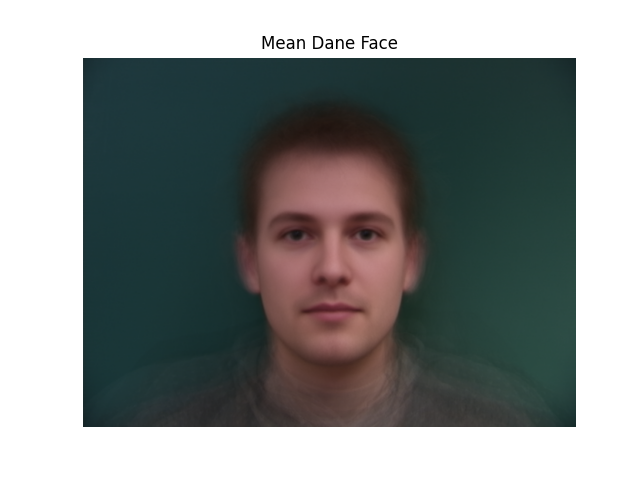

Project 3: Face Morphing
Albert Wang
Part 1: Defining Correspondences
To morph two faces together, we first have to map corresponding pairs of points between the two faces. I picked points that outlined facial features, such as the eyes, eyebrows, nose, mouth, hairline, etc, using the CS180 correspondence tool to do so. I also included points at the four corners of the image as well.
After generating the keypoint correspondences for my face and John DeNero's face, I averaged each pair of keypoints between our faces and then created a Delaunay triangulation using those averaged points.
Part 2: Computing the "Mid-Way Face"
To compute the "mid-way" face, we iterate through each triangle in the Delaunay triangulation of the average shape, and find the corresponding triangle in my face and John's face, and warp the corresponding triangles from both source images into the mean shape using affine transformation. To do this, we calculate an affine transformation matrix that transforms each triangle in the source images to the corresponding triangle in the mean shape. After determining the affine transformation, for every point inside average shape triangle, we compute its corresponding source points in the original images. This is done by applying the inverse of the transformation matrix to the mean triangle's coordinates. We use skimage.draw.polygon to get the pixel coordinates that fall inside each triangle in the mean shape, ensuring that all relevant pixels are processed. Then, we interpolate the color in the mean image from the source images using scipy.ndimage.map_coordinates. We blend the two images by averaging their pixel values and warping both to the mean shape, which produces the midway face.
The morph(im1, im2, im1_pts, im2_pts, tri, warp_frac, dissolve_frac) function is responsible for blending the two images. The parameter warp_frac controls how much of each image's shape is warped towards the mean shape, while dissolve_frac controls how much of each image's pixel values are blended. For the midway face, both warp_frac and dissolve_frac are set to 0.5.
Part 3: The Morph Sequence
Using the morph function described in part 2, I capture frames using different warp and dissolve fractions to generate this morph sequence between me and John.

Part 4: The "Mean Face" of a Population
Using the Danes dataset, I first compute the average face shape of the dataset. The dataset came with .asf files with the keypoints for each image, which I averaged to get the mean shape and found the Delaunay triangulation. Then, for each face in the dataset, I morphed it to fit the average shape. This follows the same affine transformation, inverse warping, and interpolation process as described in Part 2.
Here are a few examples of individuals morphed to the average shape.
After warping all faces to the average, I took the average of these faces to compute the average Dane face.
I also warped my face to the average Dane shape, and morphed the average Dane face to my face as well.
Part 5: Caricatures: Extrapolating from the Mean
I can create caricatures by extrapolating from the mean Dane face to create exaggerated features. I use the formula
new_points = orig_points + alpha * (orig_points - mean_points) to emphasize deviations of my face from the mean Dane face. Here are the results with different alphas:
Bells and Whistles: Changing Gender of My Face
Using an averaged Chinese female image, I morphed my face to the average image using only shape, only color, and both. Here were the results: